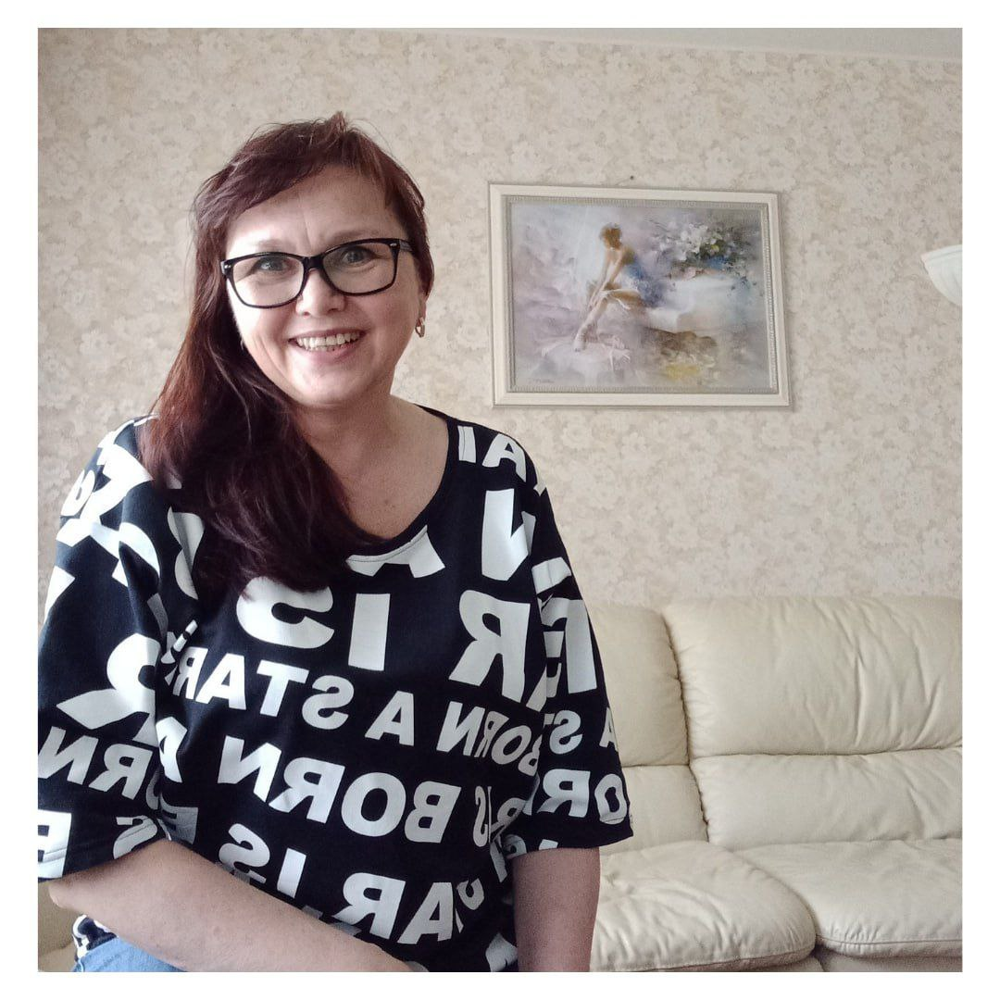
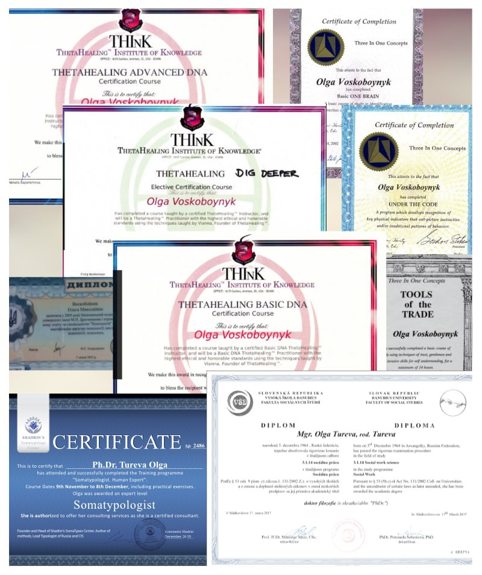
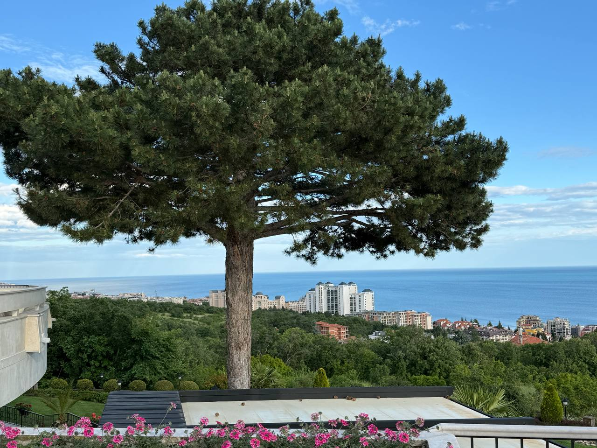
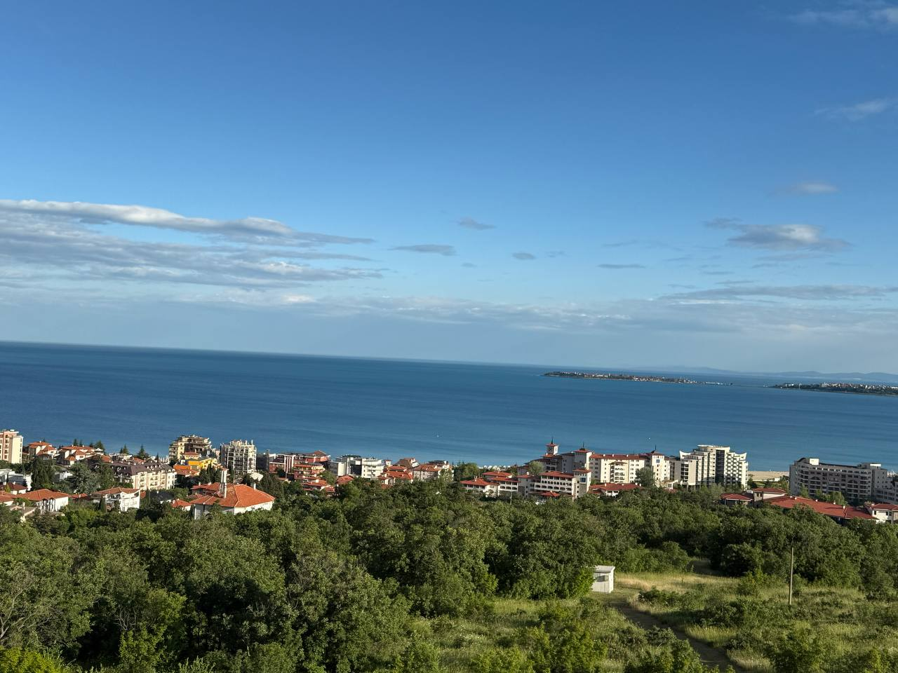
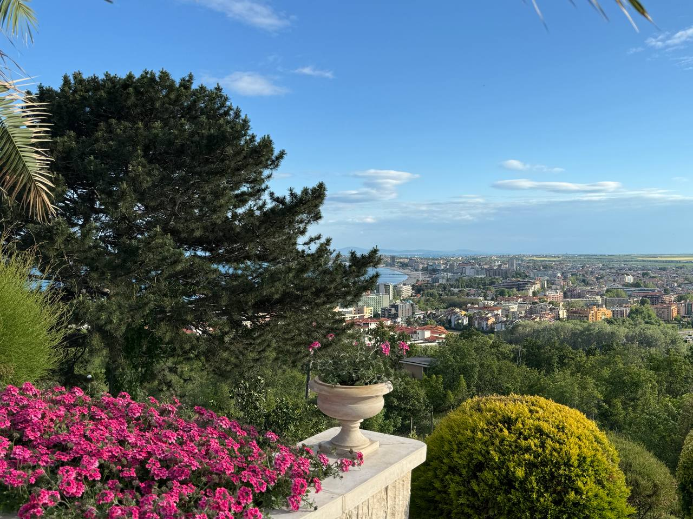
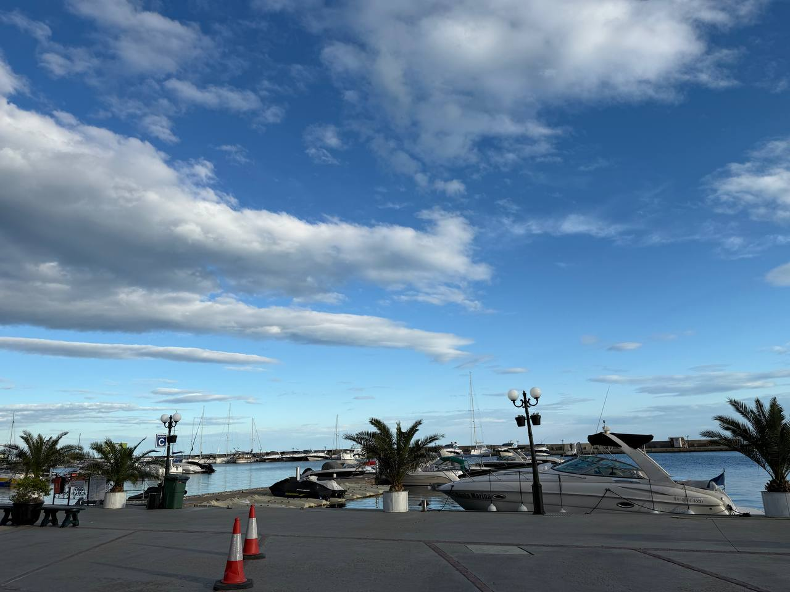
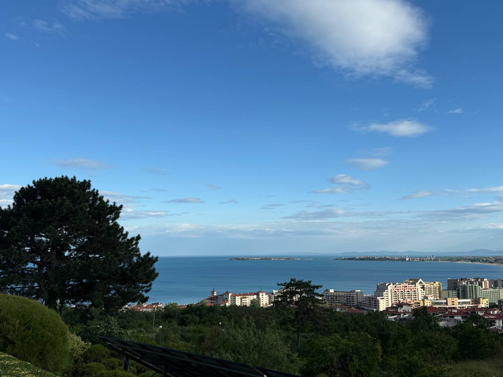
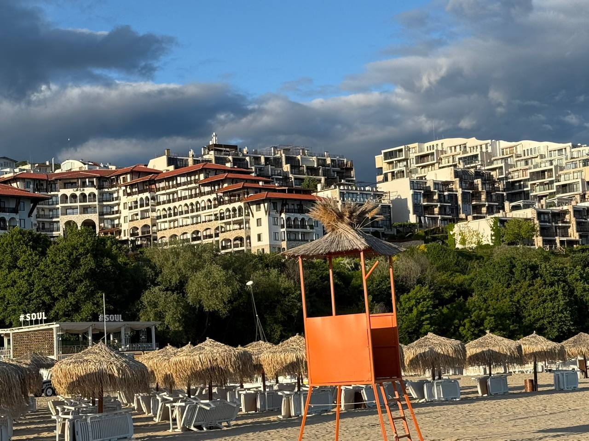
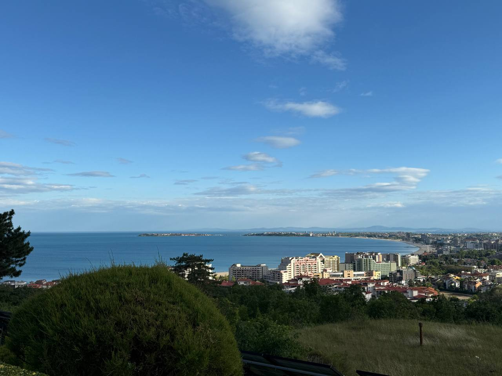
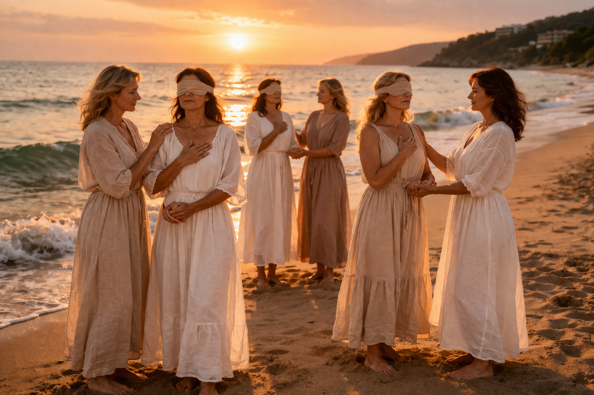

Черный Ретрит: не медитация — настоящая работа
Глубокое погружение на берегу Чёрного моря — пространство, где женщина перестаёт бежать и возвращает себя себе.
Отвечу лично. Без обязательств.
Вы здесь, потому что
Одна из этих ситуаций — про вас?
С утра уже нет сил
Снаружи всё хорошо. Внутри — пустота, тихое ощущение что «что-то не так». Держитесь, потому что надо. Но силы заканчиваются.
Отдых не восстанавливает
Отпуск не помогает. Просыпаетесь уже уставшей. Тело болит — врачи говорят «всё в норме». Вы чувствуете: это не просто усталость.
Живёте в ожидании плохого
Фоновое напряжение, которое не выключается. Тревога появляется в самый неподходящий момент — и вы не понимаете откуда.
Нет времени на себя
Забыли, чего хотите сами. Живёте в роли — матери, жены, руководителя. А кто вы — вне этих ролей? Ответа нет.
Если хоть одно — про вас, вы попали туда, куда надо.
Это не отдых. Это работа. Настоящая.
Ваш проводник
Ph.Dr. Olga Tureva

Ph.Dr. Olga Tureva
Ольга Турьева
Доктор философии · Кризисный психолог · Соматолог · Физиотерапевт
34 года практики. Работала в Праге 15 лет. Сейчас — онлайн из Германии и очно на ретритах. Ко мне приходят тогда, когда больше никто не помог: перед операциями, в разводах, после потерь.
Работаю через тело: тазовые кости, позвоночник, меридианы, авторские телесные практики. Кризисная психология — не теория, а ежедневная практика с реальными людьми в реальных кризисах.
Свой метод начала разрабатывать, когда врачи сказали, что моя дочь с гидроцефалией проживёт 7–10 лет. Продала машину, нашла китайского учителя, 9 месяцев училась. Дочери сняли инвалидность — сейчас ей за 30, знает 8 языков. Тело оказалось умнее врачей.
Образование и дипломы

Для кого этот ретрит
Это место создано для вас, если…
Вы потеряли себя
В роли матери, жены, руководителя — вы всем нужны, но забыли, кто вы на самом деле. Пора вспомнить.
- Каждое утро просыпаетесь и думаете: «Это всё?»
- Не можете вспомнить, что по-настоящему радует
- Чувствуете себя нужной всем — и не нужной себе
- Внутри пустота, которую не заполняет ни работа, ни отдых
Хроническая усталость
Даже после отпуска не восстанавливаетесь. Нужна настоящая перезагрузка — глубокая, системная.
- Просыпаетесь уже уставшей, даже после сна
- Отпуск не помогает — через три дня снова в режиме «надо»
- Тело болит, но врачи говорят: всё в норме
- Внутренний шум не выключается даже ночью
Жажда перемен
Вы чувствуете, что стоите на пороге нового этапа. Нужно пространство, чтобы прислушаться к себе и сделать шаг.
- Чувствуете, что живёте «не свою» жизнь
- Откладываете важные решения — снова и снова
- Внутри есть голос, который что-то знает — но вы его не слышите
- Хочется ясности: куда идти и кем быть дальше
Результаты работы
Как меняется жизнь после работы с Ольгой
Авторская технология · проработка офлайн · физиология + психология
История клиентки
Лена, 5 дней личной работы
«Из диагноза "некроз" — в состояние "люблю жизнь"»
На входе
- Боль, диагноз «некроз ТБС»
- Разница длины ног ~2 см
- Скачки давления, усталость
- Тяжесть в теле, бессонница
- Кризис в отношениях
На выходе
- Облегчение после 1-го сеанса
- Выровнялась осанка и походка
- Ушли отёки и объёмы без диет
- Лёгкость, спокойный сон
- Новые решения в семье
«Почему физиотерапия без психологии откатывает назад? Потому что тело держит причину, а не симптом. Когда работаешь в связке — тело + психика + причина — результат закрепляется навсегда.»
Авторская технология: проработка всех процессов офлайн — физиология, психология, телесная регрессология в одном интенсиве.
Именно этот метод лежит в основе Чёрного ретрита.
Отзывы участниц ретрита появятся после первого заезда — май 2026.
Что говорят клиентки
Отзывы о работе с Ольгой
С января 2025 — марафон «Секреты женской энергии», ТЭС, открытие тела. Ушло -4,5 кг, объём талии минус 10 см за 2 месяца. Могу стоять на одной ноге и держать равновесие — для меня это показатель внутренней гармонии. Начала слышать свою интуицию. Гораздо легче сохранять спокойствие в течение дня. Учусь принимать с благодарностью то, что приходит от окружения. Благодарю Ольга, учусь кайфовать.
Ольга, наша встреча вернула меня в реальный мир. То, где я оказалась — была лишь иллюзией «правильных» решений. По сути — долговая яма, долгие абьюзивные отношения, состояние вечной жертвы. Ты показала реальный путь выхода из иллюзий в жизнь. Да, это не быстро — но это путь к себе. Ты честная, любящая, открытая и профессионал своего дела.
Попал случайно — случайностей не бывает. Проработал ключевые детские травмы и убеждения, которые блокировали мои возможности. Обращался к разным методикам — там временный результат. Здесь: 20% усилий = 80% качественного результата. Прошло больше двух недель — результат не только устойчив, но идёт прогресс. Ольга обладает знаниями, приближёнными к истине. Мастер своего дела и от Бога, и по призванию.
Была в глубоком внутреннем кризисе, усталости, боли в теле, проблемах в отношениях. Сегодня здоровье улучшилось, исчезла боль, появилась энергия. Научилась слышать себя и свои желания. Отношения с мужем стали теплее. Финансы улучшились. Главное — вижу куда идти дальше, есть внутренний компас. Это не просто обучение — это путь домой, к себе настоящей.
Поняла, где собака зарыта — что мешает. Поймала разницу между детскими и взрослыми желаниями, и это так явно видится сейчас, что странно почему раньше не дошло. Про технику простукивания знала, но игнорировала — теперь буду точно использовать. Как эксперт скажу: 100% польза и выгода для людей. Качественный, эффективный и результативный материал. Ценно.
Благодарю за профессионализм. В памяти всплывали истории: с 3 лет я попадала в катастрофы — бык, тонула, автоаварии. Благодаря Ольге осознала: всё это программы смерти. Но я живая, активная и собираюсь жить долго и счастливо. Значит у меня есть миссия. Осознала, что большую часть жизни прожила в мужской энергии. Было и освобождение, и помощь, и много других осознаний.
Несколько лет ухудшалось самочувствие и здоровье — это влияло на всё: финансы, работу, отношения. За две сессии получила большое количество рекомендаций и практик. Главное открытие — я живу не свою жизнь, взяла на себя чужой сценарий. Внутренне чувствовала, но не понимала что происходит. Вы аккуратно провели меня в регресс, и всё встало на свои места. Поняла в каком направлении продолжать работу по возвращению себя себе.
Появились сомнения в том, чем занимаюсь — их пытались внушить извне. Ольга практически сразу сказала: я просто не пошла по пути другого человека, а осталась в своём энергетическом поле. Чётко объяснила как попадаем на внушения других людей. Планирую работать дальше — видно, что человек знает и понимает что делает. Если хотите привести мысли и тело в порядок — смело обращайтесь.
Давно подписана, не верила что смогу попасть. Всё было сказано в точку — про меня, мою жизнь, отношения в семье, мою боль и чувства. Как будто Ольга знает меня много лет. Чувствовалась эмпатия и сопереживание. Озвучила как работать с собой и в каком направлении двигаться дальше. Если стоишь перед выбором, не знаешь в какие двери стучаться — не жди, напиши. Жизнь заиграет другими красками.
Отзывы о личной работе и клубе. Отзывы участниц ретрита появятся после первого заезда — май 2026.
Место проведения
Болгария, Святой Влас







Что вы получите
Три столпа трансформации
Глубокое восстановление
10 дней в атмосфере Черного моря и болгарской природы. Медитации на рассвете, звук прибоя, никакого информационного шума — только вы и ваше тело.
Тело · Природа · Тишина- Физиотерапия: коррекция тазовых костей, позвоночника, выравнивание тела
- Работа с банками — снимаем годами накопленное напряжение
- Специальные приборы для растяжки позвоночника
- Техника самостоятельного выравнивания — делаете дома самостоятельно
- Трёхразовое питание с поваром прямо в доме
Внутренняя трансформация
Авторские практики Ph.Dr. Olga Tureva: работа с глубинными установками, психосоматикой и кризисной психологией. Результат — устойчивое внутреннее состояние.
Психология · Практики · Рост- Активация биокомпьютера — включение внутреннего видения
- Работа с родовыми программами: что было заложено в детстве
- Перерождение — авторская техника осознанного переживания
- Рисование с закрытыми глазами — выгрузка бессознательного
- ThetaHealing — работа на уровне подсознания
Пространство для своих
Маленькая, тщательно отобранная группа. Вы поддерживаете друг друга, делитесь опытом — связи, которые остаются надолго после ретрита.
Сообщество · Поддержка · Связи- Пока одна группа с закрытыми глазами — вторая становится её опорой
- Вы ведёте другую за руку к морю, к столу — и сами проходите через это
- В такой глубине рождается настоящая близость — не светская, а человеческая
- После ретрита группа остаётся на связи
Формат
10 дней, которые меняют всё
10 дней / 9 ночей
Не отпуск. Ровно столько, сколько нужно, чтобы войти в глубину и выйти с устойчивым новым состоянием.
- Дни 1–2: замедление, знакомство, настрой
- Дни 2–5: Группа А — работа с закрытыми глазами, Группа Б — поддержка
- День 6: интеграция, обмен опытом, смена ролей
- Дни 7–9: Группа Б погружается, Группа А — опора
- День 10: ритуал закрытия, личный план на три месяца «после»
Малая группа до 8 чел.
Тщательный отбор по анкете и личному созвону. Ведущая знает каждую участницу лично.
- Группа делится на две части — ключевой механизм ретрита
- Рядом всегда есть кто-то: ведут за руку к морю, к столу
- Потом группы меняются — каждая проходит оба состояния
- В такой уязвимости рождается близость, которая остаётся на годы
Безопасность 24/7
Кризисный психолог с 34-летним опытом рядом в любое время суток. Вы никогда не остаётесь одна.
- Собеседование до ретрита — исключаем противопоказания
- Физическое сопровождение 24/7 — за руку в любой момент
- Выход из практики в любой момент без объяснений
- Не берём людей с психиатрическими диагнозами — это ответственность
Болгария · Черное море · Святой Влас
Тихий курорт в 200 метрах от моря. Отдельный дом. Трёхразовое питание с поваром. Болгария — Шенген с января 2025.
- 200 метров от моря — утренние медитации у воды, закат с прибоем
- Новые апартаменты: вся мебель, постельное, техника — только новое
- Трёхразовое питание: повар готовит прямо в доме
- Аэропорт Бургас — 35 км, трансфер при раннем бронировании
- С мая море уже 20–22°, плавать с первого дня
- Москва → Стамбул → Бургас. Прямые рейсы с мая.
Семейные апартаменты
Совершенно новые квартиры — куплены в феврале и полностью укомплектованы для комфортного проживания. Есть всё необходимое.
- Куплены в феврале 2026 — новый ремонт, новая мебель, всё с нуля
- Магазины и рестораны в шаговой доступности
- Прогулки до яхт-клуба — прямо от дома
- Прокат автомобилей рядом — свобода передвижения
Продлённый отдых после ретрита
После окончания программы — оставайтесь ещё. Те же апартаменты, то же побережье, полная свобода.
- Минимум 19 дней дополнительного отдыха в тех же квартирах
- По предварительной договорённости — бронируйте заранее
- Черноморский курорт летом: море, солнце, тишина после глубокой работы
- Идеально для мягкой интеграции после ретрита


Только для участниц
Бонусы ретрита
Трансфер из Бургаса
Встречаю лично в аэропорту и везу до дома ретрита — 35 км без такси и поиска дороги.
При раннем бронировании- Встречаю лично в аэропорту Бургас — не нужно искать такси и разбираться с дорогой
- 35 км до дома ретрита — везу прямо до двери
- Трансфер из Варны тоже возможен — со скидкой 50%
Физиотерапия
Индивидуальная диагностика и коррекция тела: тазовые кости, позвоночник, выравнивание. Уходите с техникой — 5 минут в день дома.
Включено в программу- Что входит в сессию: выравниваю тазовые кости и длину ног — у большинства женщин ноги разной длины, особенно после родов. Этот перекос влияет на осанку, усталость, боли в спине
- Почему это важно: каждая женщина ходит на каблуках и подворачивает ноги. Тело постепенно теряет равновесие. Я помогаю вернуть баланс
- Ваш навык навсегда: вы получаете авторскую технику работы с собственным телом — умеете самостоятельно поддерживать баланс дома, это занимает несколько минут в день
- Формат: одна индивидуальная сессия, входит в стоимость ретрита
Техника выхода из стресса
Авторская техника Ph.Dr. Olga Tureva — работает у каждого мгновенно. Остаётся с вами навсегда.
Навык на всю жизнь- Как работает: когда человек входит в стрессовое состояние, запускается обратный процесс — через тело, по меридианам и точкам. Чувствительность восстанавливается, энергетика выравнивается
- Результат: от 2 до 5 минут — и женщина чувствует, что вышла из стопора. Не подавила, не заглушила — а действительно вышла
- Кому подходит: работает у каждого, без исключений. Не требует медитативного опыта или специальной подготовки
- Навык остаётся навсегда: после ретрита вы умеете применять технику самостоятельно — в любой ситуации, в любое время
Реферальная программа
Пригласи подругу на ретрит — и получи скидку 10% после того, как она оплатит своё участие. Без ограничений по количеству приглашений.
О ретрите
Что такое Чёрный ретрит
Это не отдых и не медитация. Чёрный ретрит — это 10 дней глубокой трансформационной работы с телом и психикой. В отличие от обычных велнес-программ, здесь нет красивых ритуалов ради ритуалов. Есть настоящая работа: с тем, что болит, мешает и держит вас в одном и том же месте годами.
Участницы большую часть дня проводят в условиях сенсорного ограничения — с закрытыми глазами. Когда исчезает зрение, включается то, что обычно заглушает шум жизни: тело, чувства, интуиция. Именно здесь начинается настоящий контакт с собой.
Для кого этот ретрит
Для женщин, которые устали быть в роли и хотят вернуться к себе.
- Вы живёте на износ: работа, семья, обязательства — и ни минуты на себя
- Вы в точке выгорания: отпуск не помогает, тело сигналит болью и усталостью
- Вы переживаете серьёзные изменения: развод, потеря, болезнь, смена жизненного курса
- У вас повторяются одни и те же сценарии — в отношениях, деньгах, карьере — и вы понимаете, что дело внутри
- Вы чувствуете: что-то должно измениться. Но не знаете, с чего начать
Важно: ретрит требует психологической готовности к интенсивной работе. Обсуждаем на предварительном созвоне.
Какие запросы здесь прорабатываются
Ретрит работает с тем, что не решается «ещё одним курсом» или разговорами с подругой.
- Хроническая усталость и выгорание — когда отдых не восстанавливает, а тело болит без причин
- Ощущение «я живу не свою жизнь» — потеря себя в ролях матери, жены, руководителя
- Тревога и страх — фоновое напряжение, которое не выключается
- Повторяющиеся паттерны — одни и те же проблемы в отношениях, деньгах, саботаж собственных успехов
- Эмоциональные травмы — то, что осело в теле и влияет на жизнь через психосоматику
- Экзистенциальный кризис — потеря смысла, апатия, пустота при внешнем благополучии
Что меняется после
Ретрит запускает процесс, который продолжается после отъезда. Это не разовая встряска — это сдвиг.
- Уходит хроническое напряжение — тревога, подавленность, апатия перестают быть фоном жизни
- Возвращается контакт с собой — вы снова слышите, чего хотите, что чувствуете, где ваша граница
- Рвутся старые сценарии — там, где раньше срабатывал автопилот, появляется выбор
- Возвращается энергия — не из силы воли, а из восстановленного ресурса тела и психики
- Меняется качество отношений — вы начинаете строить их из себя, а не из страха или привычки
Вопросы и ответы
Всё, что важно знать до приезда
Чёрный ретрит — это 10 дней интенсивной работы с телом и психикой в условиях сенсорного ограничения. Участницы большую часть дня проводят с закрытыми глазами: ходят, едят, практикуют, слушают море — и всё это без зрения.
Когда не видишь — включается другое. Слух обостряется, тело начинает говорить громче, интуиция просыпается. Психика открывается иначе, когда нет бесконечного потока визуальной информации. Именно в этом состоянии происходит настоящая работа — не поверхностная, а глубокая.
Это не медитация и не йога. Формат включает кризисную психологию, физиотерапию тела, ThetaHealing и работу с сенсорным ограничением. Четыре дня из десяти — с полностью закрытыми глазами. Это самая интенсивная часть ретрита и одновременно — самая трансформирующая.
Болгария, Святой Влас, 200 метров от моря. Группа — максимум 8 человек.
Потому что ретрит — интенсивная работа с психикой и телом. На собеседовании я узнаю вашу историю, выясняю, есть ли противопоказания, и определяю, готовы ли вы сейчас к этому формату. Если понимаю, что сейчас не время — говорю честно. Я не набираю группу ради группы: каждая участница приходит осознанно.
Да, безопасно. И важный момент: маску вы выбираете и привозите сами. Это может быть маска для сна, тонкий шарф или платок — то, в чём вам будет комфортно. Это ваша вещь, ваша энергетическая граница между вами и внешним миром. Не казённая повязка, а личный предмет, который принадлежит только вам.
Снять маску можно в любой момент без объяснений — никакого принуждения, никакого осуждения. Рядом всегда кто-то есть: в туалет, к морю, к столу — ведут за руку. Вы никогда не остаётесь одна в темноте.
Это нормальная часть процесса — сопротивление и страх означают, что работа идёт. Я знаю, как реагирует тело и как реагирует психика, когда поднимается что-то глубокое.
15 лет я работала офлайн как кризисный психолог и физиотерапевт. Параллельно — китайская медицина. Я видела сотни состояний: паника, оцепенение, слёзы, ярость, диссоциация. Я знаю, что с этим делать в моменте — не теоретически, а руками и присутствием.
У меня есть конкретные техники для каждого состояния: когда накрывает — я рядом, и мы выходим из этого вместе. При необходимости — индивидуальная работа, пауза, время. Никто не остаётся один в сложном состоянии.
Да. Острые психотические состояния, тяжёлые психиатрические диагнозы в стадии обострения, беременность. Обо всём важном говорим на предварительном созвоне. Иногда я честно говорю: сейчас не время — и предлагаю другой формат. Ваша безопасность важнее.
Включено: проживание 10 дней, трёхразовое питание (повар в доме), вся программа ретрита, индивидуальная кризисная сессия, физиотерапевтическая диагностика и коррекция тела, трансфер из Бургаса (при раннем бронировании), все материалы для практик.
Не включено: перелёт, трансфер из Варны (50% скидка), личные расходы.
Нет. Формат выстроен как единый цикл. Уйти в середине — значит прервать процесс в самом уязвимом месте. Пожалуйста, планируйте заранее и закрывайте все дела до приезда.
Болгария вступила в Шенген с января 2025 года. Удобный маршрут: Москва или Петербург → Стамбул → Бургас (прямые рейсы с мая). Из Бургаса до Святого Власа 35 км. Трансфер из Бургаса — бонус для тех, кто заранее бронирует место.
Предоплата не возвращается. Возможен только перенос на другие даты ретрита — по предварительному согласованию.
Только на русском языке. Группа полностью русскоговорящая. Глубокая психологическая работа требует родного языка — точных слов и тонких нюансов.
Стоимость
8 участниц, работают парами. Питание и всё необходимое включено. Полная оплата при заселении.
- Май 20–30 — 200 000 руб.
- Июнь 20–30 — 300 000 руб.
- Июль 20–30 — 350 000 руб.
- Август 20–30 — 350 000 руб.
- Сентябрь 3–13 — 300 000 руб.
- Октябрь 1–10 — 200 000 руб.
Включено: проживание, питание (повар), вся программа, кризисная сессия, физиотерапия, материалы.
Бонус при раннем бронировании — трансфер из Бургаса бесплатно.
Программа по дням
10 дней — выверенный цикл. Каждый день выстроен так, чтобы вести вас глубже.
- День 1: приезд, знакомство, вечерний первый круг
- Дни 2–3: замедление, тело, Группа А начинает работу с повязками
- Дни 4–5: углубление, кризисная работа, ThetaHealing
- День 6: интеграция, обмен опытом, смена ролей
- Дни 7–8: Группа Б — закрытые глаза, Группа А — поддержка
- День 9: физиотерапия, коррекция тела, техника выхода из стресса
- День 10: ритуал закрытия, личный план на три месяца, вечер у моря
Почему это работает
Сенсорное ограничение — один из самых мощных инструментов изменения, известных науке.
- Нейронаука: в сенсорном ограничении активируется дефолтная сеть мозга — зона самопознания и переработки травм
- Тело как ключ: психологические блоки хранятся в теле — через физиотерапию мы обходим ментальные защиты
- ThetaHealing: работа в тета-ритме (4–7 Гц) позволяет переписывать убеждения на уровне подсознания
- 10 дней: именно столько нужно для формирования нового нейронного паттерна
Готовы сделать шаг?
Запишитесь на бесплатную консультацию — узнайте все детали ретрита и решите, подходит ли он именно вам. Отвечу лично.
Записаться на ретритОтвечу в течение часа. Без обязательств.